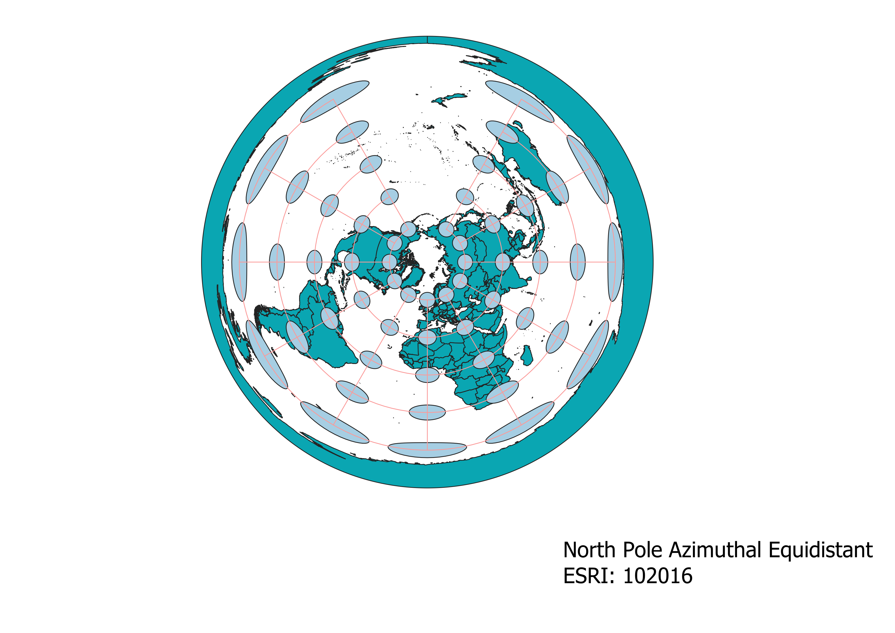

In this project I learned how to display images in different projections
Using the Qqis software, I was able to modify a single map by devloping it
in several different projections. First I began by adding a vector layer of
a global map, with data provided by "Natural Earth." After my map was displayed,
I went to the Coordinate Reference System tab under Project Properties. At this
point I was able to select which projections I wanted to display on said map by
entering some version of the name of said projection in the filter section. Once
I applied the altering projection, I also applied the Indicatrix Mapping function
to provide a refernce point, therefore seeing if changes in size or shape had
been made to create the 2-dimensional projection.
WGS84 Projection
The WGS84 projection does not appear to distort the location of mapped data, however
area, shape, and distance seem distorted.

Aitoff Projection
The Aitoff projection distorts many apsects of the map, such as shapes, area, distance
and direction.

Pseudo Mercator Projection
The Psuedo Mercator projection is similar to the WGS84 projection in that it does not
appear to alter relative location of mapped objects, however, unlike the WGS84 the shape
is also unchanged. There is evident distortion with distance and area.
Sphere Winkel Projection
The Sphere Winkel projection models the shape of an ellipsoid. There are distortions
regarding area, shape, distance, direction and angles.
World Equidistant Conic Projection
The World Equidistant Conic projection appears to distort distance, area, shape. The
distortion increases as one travels farther north or south from the standard line.
Because of this, regions in mid-latitude areas are most accurately portrayed.
North Pole Azimuthal Equidistant Projection
The North Pole Azimuthal Equidistant projection is similar to the conic projection in that
distortion increases as one travels farher north or south from the standard line, however it
seems to remain true to distance and direction.

Sphere Craster Parabolic Projection
The Sphere Craster Parabolic projection maintains the area, but greatly distorts shape and direction.

Mollweide Projection
The Mollweide projection, like the Sphere Craster projection is an equal-area projection. The overall
shape of the distortion appears to mirror an ellipsoid.
Data used for this project
Download Natrual Earth 1:10m Cultural Vector